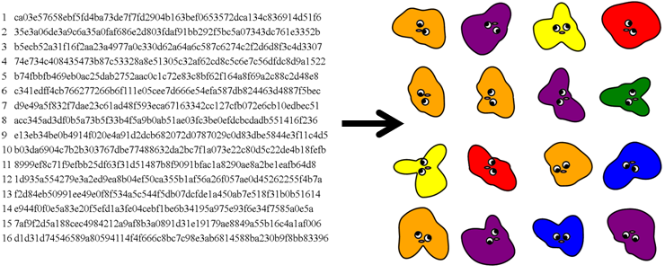
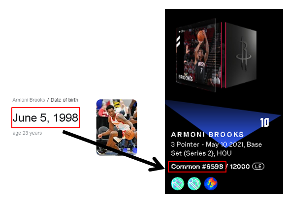

| Visual | Project | Description | Tools Used |
| Wall of Gum - Web App | A work-in-progress "decentralized app" ("dapp") using the Cardano blockchain for the database and source of interactivity. Smart contracts enable users to change state. | -Haskell -Docker -Javascript -CSS -Excel | |
| Wall of Gum - Gum Ball Machine Animation | A Javascript canvas that renders the collision dynamics of randomized "gum balls" in the browser. Right click-> View source to see implementation. | -Javascript -CSS | |
 |
Wall of Gum - "Splatify" Animation | A python program that takes a 256 bit hash (from the block chain) and parses it into a "splat" shape. Animation created by initializing a random "splat" shape and converging to the final shape with an underdamped system amplitude. Resulting shape is an NFT. | -Python -matplotlib |
| Magnetic Dipoles | A program for simulating the dynamics of a set of rotating elements containing magnetic dipoles. The program creates an NxN grid of "wheels" each containing "M" spoke elements. Each spoke is assigned a North/South polarity. Each wheel is assigned a random starting position. The simulation proceeds from t=0 and renders how the system reaches equilibirium. | -Matplotlib -Numpy | |
  | Isometric Projections of Two Lines ("Apparent Lengths") | Full write-up here. I thought of this shape (left image) for describing projection error. When viewed from the X, Y, and Z axes, rational observers make mutually exclusive conclusions in response to "Which line is longer blue or red?". I made a program to study this perception and found two axes of rotation through which the red and blue lines appear to have identical lengths (right image). I extend this geometric principle to cross-functional cooperation - only through synthesizing all views and achieving an "isometric" perspective, can the truth be correctly assessed. | -Matplotlib -Numpy |
 | Rare Serial Number Alert Program | Program that monitors when NBATopshot NFT's become available for sale that meet the following criteria: 1) Below a price threshold 2) Serial Number = Player's Birthday Collection of Found Examples | -requests |